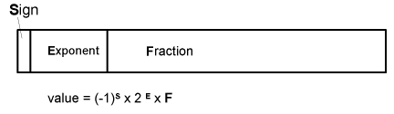

| Previous Section | Next Section | Index | Questions | Search the Text |
This section is split among several pages because of its length. The start of split sections have a table of contents showing each page and the contents of the current page. The current page is emphasized in bold.
We have seen that by moving the binary point in an integer we can trade off range versus precision in our arithmetic. Ideally, we want all the bits of our integer to be significant to obtain the greatest precision, however in practice not all bits will be significant (leading zeroes are not significant) so that we can represent a range of values. In this section we will consider another tradeoff which will give us much increased range and in most cases greater precision than scaled integer arithmetic. We will give up some of the bits in our representation to be used to hold the binary scale factor. Since the scale factor is associated with the value rather than being fixed, the range of a value can be dynamically adjusted. Here is the format of a "generic floating point" value:

The sign field is a single bit, which is 1 to indicate negative values. Almost all floating point formats are sign-magnitude representation. The binary scale factor exponent is the second field, while the scaled value in the last field is called the fraction. Occasionally the fraction is called the mantissa, however that is a misuse of the term.
If the fraction has a most significant bit of 1, the greatest precision can be represented, and the value is called normalized. Most floating point operations will finish by normalizing the value - shifting the fraction and adjusting the exponent as necessary. For convenience, floating point formats are designed so that a floating point zero value is represented with the same bit pattern as an integer 0. We see that is the case here if we state that a zero value must have a zero exponent.
In this section we will develop a floating point function library, a collection of subroutines which handle our commonly needed arithmetic functions. Most microcontroller users will have these libraries as part of their program development system. In some very advanced microcontrollers, and in most modern advanced microprocessors, floating point arithmetic is built into the hardware as additional CPU instructions.
Developing a floating point library is a tedious task, with many chances for introducing obscure errors. For this reason, it is a task best left for experts. Having said that, and saying that I am no expert, we will forge ahead and develop the library anyway. This text does not cover the fine points of floating point calculations. For a thorough study, especially recommended if you intend to write a floating point library, I recommend Donald E. Knuth's The Art of Computer Programming, Volume 2.
To use the library, one assembles it with the application program, and calls the various functions contained within. Here are the functions:
We will use 32 bit floating point values. The 68HC12 has no intrinsic 32 bit data format, so we will claim the format is an extension of the existing big-endian format in that the most significant word of the 32 bit "double word" is stored first, followed by the least significant word. Because there are no 32 bit registers, we will pass function parameters and results on the stack. To add two 32 bit floating point values at (double word locations) v1 and v2 together, storing the sum at double word location v3, we would execute:
movw v1+2 2,-sp ; push least significant word of v1 on stack
movw v1 2,-sp ; followed by most significant (in stack at lower address)
movw v2+2 2,-sp ; repeat for v2
movw v2 2,-sp
jsr fpAdd ; Perform floating point addition
movw 2,sp+ v3 ; pull sum from stack, storing at v3
movw 2,sp+ v3+2
We can perform chain calculations keeping the values on the stack, much like a RPN calculator. For instance, the following code will convert a floating point Celsius temperature to Fahrenheit using the floating point formula F= C*9/5 + 32:
movw celsius+2 2,-sp ; push C on stack
movw celsius 2,-sp
movw #9 2,-sp ; push integer 9 on stack
movw #0 2,-sp
jsr fpFloat ; convert 9 to floating point
jsr fpMultiply ; multiplies C by floating point 9
movw #5 2,-sp ; push integer 5 on stack
movw #0 2,-sp
jsr fpFloat ; convert 5 to floating point
jsr fpDivide ; divide (C*9) by floating point 5
movw #32 2,-sp ; push integer 32 on stack
movw #0 2,-sp
jsr fpFloat ; convert to floating point
jsr fpAdd ; add 32
movw 2,sp+ fahrenheit ; and store
movw 2,sp+ fahrenheit+2
We can save execution time as well as code by calculating the constant floating point values in advance. Lets say C1p8 is a double word containing the constant 1.8 (9/5), and C32 is a double word containing the floating point value 32. The program becomes:
movw celsius+2 2,-sp ; push C on stack
movw celsius 2,-sp
movw C1p8+2 2,-sp ; push C1p8 on stack
movw C1p8 2,-sp
jsr fpMultiply ; multiplies C by 1.8
movw C32+2 2,-sp ; push C32 on stack
movw C32 2,-sp
jsr fpAdd ; add 32
movw 2,sp+ fahrenheit ; and store
movw 2,sp+ fahrenheit+2
What are the details of the floating point format? Well instead of making one up, let's use the industry standard.
Continue with IEEE Floating Point Format.
Return to the Index.